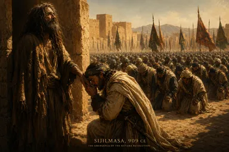

Tahun 296 H / 909 M. Seorang pria bernama Sa'īd — yang mengaku keturunan Ismā'īl ibn Ja'far al-Ṣādiq — keluar dari penjara bawah tanah di Sijilmāsa, Maroko. Rambutnya kusut. Matanya belum terbiasa dengan cahaya. Di hadapannya, ribuan prajurit Barbar suku Kutāma bersujud.
Abu 'Abdallāh al-Shī'ī — sang dai revolusioner yang baru saja menaklukkan separuh Afrika Utara — berlutut. Ia mencium tangan pria itu.
"Kalian telah menang," katanya kepada pasukannya. "Inilah Imam kalian."
Beberapa tahun kemudian, Abu 'Abdallāh al-Shī'ī dibunuh. Atas perintah Imam yang ia bebaskan sendiri.
Inilah paradoks pendirian kekhalifahan Ismailiyah: dinasti Syiah terbesar dalam sejarah dibangun oleh seorang dai revolusioner — lalu dai itu disingkirkan begitu Imam naik takhta. Dari paradoks inilah lahir Kairo, Al-Azhar, dan imperium tiga benua.
Sang Dai: Abu 'Abdallāh al-Shī'ī
Siapa dia? Seorang dai Ismailiyah dari Yaman. Dikirim ke Afrika Utara sekitar tahun 280 H dengan satu misi: mencari tanah untuk dakwah. Tanah itu ia temukan pada suku Kutāma — Barbar pegunungan di Aljazair timur, keras, setia, dan belum tersentuh kekuasaan Abbasiyah.
Al-Maqrīzī (w. 845 H) dalam Itti'āẓ al-Ḥunafā' — sumber Sunni paling otoritatif tentang Fatimiyah — mencatat bagaimana dua dai pendahulu dikirim lebih dulu. Misi mereka: membajak tanah.
"Pergilah ke Maghrib. Tanah itu kosong. Bajaklah — sampai datang penabur benih."
Mereka membajak. Suku Kutāma masuk ke dalam dakwah. Uang dan hadiah mengalir. Ketika Abu 'Abdallāh tiba, tanah sudah siap.
Yang terjadi kemudian adalah revolusi. Abu 'Abdallāh memimpin Kutāma melawan dinasti Aghlabiyyah — gubernur Abbasiyah di Tunisia yang sudah korup dan melemah. Kota demi kota jatuh: Mijāna, Tīfāsh, Maskiyāna, Tebessa. Al-Maqrīzī menulis:
"Dan membesarlah urusan Abu 'Abdallāh. Dan tegaklah negaranya."
Ziyādat Allāh III — penguasa Aghlabiyyah terakhir — mengirim pasukan demi pasukan. Semua kalah. Ia sendiri sibuk mabuk di istana sementara kotanya runtuh. Akhirnya ia melarikan diri ke Mesir. Afrika Utara jatuh ke tangan sang dai.
Lalu Abu 'Abdallāh melakukan langkah yang menentukan: ia berbaris ke Sijilmāsa — kota di ujung Maroko — tempat Sa'īd (calon 'Ubayd Allāh al-Mahdī) dipenjara oleh gubernur setempat. Ia membebaskannya. Ia menyerahkan seluruh hasil revolusi. Ia berlutut dan mencium tangan sang Imam.

Lalu ia dibunuh.
Mengapa Imam Membunuh Dainya Sendiri?
Al-Maqrīzī mencatat dua versi.
Versi resmi Fatimiyah: Abu 'Abdallāh dan saudaranya berkonspirasi dengan penguasa lokal untuk menggulingkan al-Mahdī. Mereka adalah pengkhianat. Eksekusi adalah hukuman yang setimpal.
Versi lain — yang lebih getir: al-Mahdī sadar bahwa rakyat lebih mencintai sang dai daripada sang Imam.
Abu 'Abdallāh-lah yang memenangkan perang. Abu 'Abdallāh-lah yang dikenali suku Kutāma. Abu 'Abdallāh-lah yang memiliki karisma, jaringan, dan legitimasi di lapangan. Al-Mahdī hanyalah "simbol" — baru keluar dari penjara, tidak dikenal pasukan, tidak punya sejarah perjuangan di Maghrib.
Dan simbol tidak boleh lebih redup dari pelaksana.
Farhad Daftary menyebutnya sebagai "pembersihan internal pertama dalam sejarah Ismailiyah." Dai revolusioner — orang yang paling berjasa dalam pendirian dinasti — menjadi korban pertama dari sistem yang ia bangun sendiri.
Paradoks Kekuasaan: Qāḍī al-Nu'mān dan Hukum Alternatif
Kalau Abu 'Abdallāh adalah pedang, maka Qāḍī al-Nu'mān (w. 363 H) adalah kitab. Ia arsitek yurisprudensi Fatimiyah.
Sebelum Qāḍī al-Nu'mān, Ismailiyah tidak punya fikih sistematis. Mereka mengandalkan hukum Sunni setempat untuk urusan perdata dan pidana. Tapi begitu kekuasaan Fatimiyah berdiri, khalifah butuh hukum sendiri. Tidak mungkin seorang Imam maksum — dalam doktrin Ismailiyah, pemegang otoritas ilahi — menggunakan fikih Mālikī, mazhab Sunni dominan di Afrika Utara.
Qāḍī al-Nu'mān mengisi kekosongan ini. Karya monumentalnya, Da'ā'im al-Islām (Pilar-Pilar Islam), menjadi kitab fikih resmi negara: ibadah, muamalah, ḥudūd, peradilan — semuanya bersumber dari ajaran para Imam Ahlul Bayt sebagaimana ditafsirkan oleh Imam Fatimiyah yang hidup.
Tapi inilah paradoksnya: kitab fikih Ismailiyah justru menetapkan syariat — sementara teologi Ismailiyah kemudian menghapuskannya. Di Alamut, dua abad kemudian, Imam Ḥasan II akan mendeklarasikan Qiyāma dan membebaskan umat dari beban syariat. Tapi di Kairo, Qāḍī al-Nu'mān sedang menyusun kitab hukum yang detailnya mencengangkan. Dua wajah Ismailiyah: satu membangun, satu meruntuhkan — dan keduanya mengklaim bersumber dari Imam yang sama.
Al-Azhar: Masjid yang Lahir sebagai Benteng Dakwah
Tahun 358 H / 969 M. Jenderal Jawhar al-Ṣiqillī — mantan budak yang naik menjadi panglima tertinggi Fatimiyah — menaklukkan Mesir dari dinasti Ikhshīdiyyah. Tanpa perlawanan berarti. Mesir sudah lelah.
Jawhar mendirikan kota baru: al-Qāhirah — "Yang Menang." Dan di jantungnya, ia membangun masjid yang kelak menjadi universitas tertua di dunia: Al-Azhar.
Nama "Al-Azhar" bukan sekadar hiasan. Ia diambil dari Fāṭimah al-Zahrā' — putri Nabi, ibu dari Ḥasan dan Ḥusayn, leluhur para Imam Ismailiyah. Masjid ini adalah pernyataan ideologis: kami adalah keturunan Fāṭimah, dan inilah pusat dakwah kami.
Ironi sejarah: Al-Azhar hari ini adalah jantung otoritas Sunni. Tapi ia lahir dari rahim Ismailiyah.
Kontroversi Nasab: Benarkah Mereka Keturunan Ali?
Satu pertanyaan yang belum selesai sampai sekarang: apakah para khalifah Fatimiyah benar-benar keturunan 'Alī ibn Abī Ṭālib?
Al-Maqrīzī — menulis sebagai sejarawan Sunni di Mesir pasca-Fatimiyah — mencatat perdebatan sengit ini. Ada yang mengatakan 'Ubayd Allāh al-Mahdī adalah keturunan 'Abdullāh ibn Maymūn al-Qaddāḥ — seorang dualis Persia dari Ahwaz — bukan dari Ahlul Bayt. Ada yang lebih ekstrem: ia adalah anak seorang pandai besi Yahudi dari Salamiyya, Suriah, yang diadopsi oleh dai Ismailiyah sebagai "Imam boneka."
Ibn al-Athīr — sejarawan Sunni klasik — bertanya dengan nada skeptis:
"Apa yang mendorong Abu 'Abdallāh al-Shī'ī — dan para dai lainnya — untuk menyerahkan seluruh hasil perjuangan mereka kepada anak seorang Yahudi? Adakah orang yang menganggap ini sebagai agama — lalu merelakan dirinya diperlakukan seperti itu?"
Pertanyaan yang menusuk. Tapi Farhad Daftary dan sejarawan Ismailiyah modern membantah tuduhan ini sebagai propaganda Abbasiyah. Bagi mereka, klaim "keturunan Yahudi" adalah senjata politik — cara paling efektif untuk mendelegitimasi saingan ideologis di dunia Islam abad pertengahan: tuduh nasabnya cacat.
Perdebatan ini tidak pernah benar-benar selesai. Fakta bahwa ia masih hidup setelah 1.100 tahun menunjukkan betapa dalamnya luka yang ditinggalkan Fatimiyah dalam memori kolektif Sunni.
Warisan yang Membelah
Kekhalifahan Fatimiyah bertahan lebih dari 250 tahun (909-1171 M). Pada puncaknya, mereka menguasai Afrika Utara, Mesir, Ḥijāz, Syam, dan Sisilia. Al-Qāhirah menjadi kota paling kosmopolitan di dunia: istana emas, perpustakaan 200.000 jilid, para filsuf dan ilmuwan dari berbagai agama bekerja di bawah perlindungan khalifah.
Tapi warisannya membelah.
Bagi Syiah Ismailiyah, Fatimiyah adalah zaman keemasan. Imam hadir secara fisik. Ia menjadi khalifah. Ia memimpin umat. Setelah berabad-abad satr (ketersembunyian), inilah era ẓuhūr — penampakan.
Bagi Sunni, Fatimiyah adalah luka yang belum sembuh: sebuah dinasti "bid'ah" yang menguasai jantung Islam selama seperempat milenium. Mereka mengubah azan. Mereka menghapus nama khalifah Abbasiyah dari khotbah. Mereka membangun Al-Azhar sebagai benteng dakwah alternatif — di kota yang mereka namakan "Yang Menang."
Dan di antara kedua narasi besar ini, satu sosok dilupakan: Abu 'Abdallāh al-Shī'ī. Sang dai yang merevolusi Afrika Utara. Yang membebaskan Imam dari penjara bawah tanah. Yang berlutut dan mencium tangannya.
Lalu mati di tangan orang yang ia bebaskan.
Dalam sejarah kekuasaan — spiritual maupun politik — tidak ada yang lebih berbahaya daripada menjadi terlalu diperlukan.